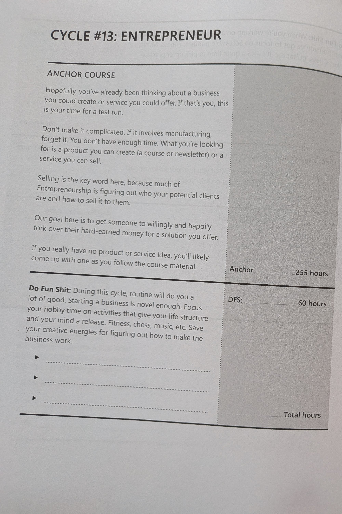

Cycle 13 · 11th-grade Spark · 2029–30
Cycles 13–14 · 11th-grade Spark — sell and allocate in one year. Climax A: ≥10 paying customers + revenue log. Climax B: tracked portfolio + published thesis / pitch night.

Entrepreneur without Investor is hustle without judgment. Investor without customers is theory. One year covers both — ops first, then capital allocation in writing.
The call: one more customer this week, one honest post, and every dollar of capital explained in writing.
Sell first, then allocate — ten customers plus a written investment thesis.
| Window | He does | Links |
|---|---|---|
| Fall | SBDC · NGPF · pick offer · start portfolio log | Tyler SBDC · NGPF |
| Winter → spring | Sell · iterate · post weekly · hold/rebalance | SBA |
| Spring | ≥10 customers + thesis / pitch night | OpenIntro Stats |
Every bookable gate, camp, class, and competition in one place. Register early — spring slots fill.
| Resource | Use for | Link |
|---|---|---|
| Tyler SBDC | Business consult | tylersbdc.com/ |
| NGPF | Personal finance + markets | www.ngpf.org/ |
| SBA Learning Platform | Business basics | www.sba.gov/learning-platform |
| TJC Entrepreneurship OSA | College path | catalog.tjc.edu/preview_program.php?catoid=15&poid=2874 |
| OpenIntro Statistics | Investor / stats layer | www.openintro.org/book/os/ |
| Modern States Accounting | Optional CLEP | modernstates.org/course/financial-accounting/ |
| Modern States Macroeconomics | Optional CLEP | modernstates.org/course/principles-of-macroeconomics/ |